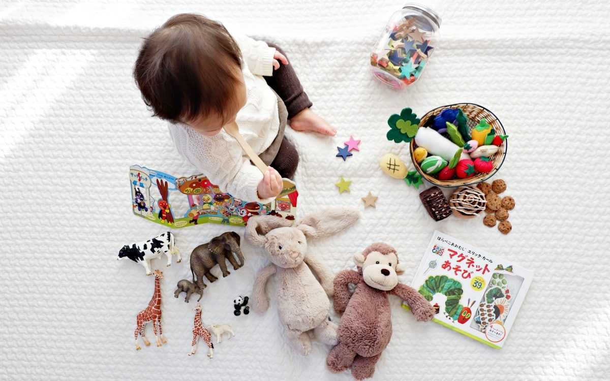

10 · Serra Gaúcha
Escola Bilíngue na Serra Gaúcha: Por Que Famílias Escolhem o Modelo Canadense

A Serra Gaúcha tem uma relação especial com o mundo. Cidades como Bento Gonçalves e Caxias do Sul cresceram sobre raízes de imigração europeia, construíram empresas que exportam para dezenas de países e cultivam uma identidade aberta ao intercâmbio cultural. Não é coincidência que a demanda por educação bilíngue de qualidade esteja crescendo com força nessa região — e que o modelo canadense esteja no centro dessa escolha.
Mas o que leva uma família da Serra Gaúcha a optar por uma escola bilíngue, e especificamente pelo modelo canadense? A resposta não é simples, e vai muito além do inglês. Neste texto, exploramos os motivos reais, os benefícios concretos e o que diferencia o modelo canadense de outras abordagens bilíngues disponíveis na região.
O Contexto da Serra Gaúcha e a Demanda por Bilinguismo
A Serra Gaúcha é uma das regiões mais dinâmicas do Rio Grande do Sul. Bento Gonçalves é referência mundial em vinicultura, com exportações para mais de 30 países e um polo de design de móveis que atrai compradores do mundo inteiro. Caxias do Sul é um dos maiores polos industriais do Sul do Brasil, com presença de multinacionais e forte vocação exportadora. O turismo da região recebe visitantes de toda a América Latina e da Europa.
Nesse contexto, o inglês não é um diferencial de luxo — é uma competência cada vez mais necessária. Mas as famílias que buscam educação bilíngue para os filhos têm motivações que vão além do mercado de trabalho. O que mais ouvimos é uma pergunta sobre o futuro: "que criança quero formar?" E cada vez mais a resposta inclui alguém que se comunica com o mundo, pensa de forma crítica e aprende ao longo da vida.
Por Que o Modelo Canadense? O Que o Diferencia
Existem várias abordagens de educação bilíngue: escolas com "aulas de inglês" diárias, programas de imersão parcial, sistemas americanos, britânicos e canadenses. O modelo canadense se destaca por um conjunto de razões que vão da neurociência à prática pedagógica.
Imersão real, não apenas "mais inglês"
No modelo canadense, o inglês não é uma matéria a mais na grade. Ele é o idioma de instrução de disciplinas como Ciências, Artes e Language Arts. A criança não aprende inglês sobre inglês — ela aprende Ciências em inglês, o que cria um contexto comunicativo real e significativo. A aquisição acontece de forma natural, pelo uso genuíno do idioma, assim como a criança aprendeu o português.
Aprendizado por investigação (inquiry-based learning)
O currículo canadense não organiza o conhecimento por memorização de conteúdos. Ele parte de perguntas, de problemas reais, de investigação. Uma turma pode passar semanas explorando um tema — como ecossistemas da Serra Gaúcha — levantando hipóteses, fazendo experimentos e chegando a conclusões. Esse método desenvolve pensamento crítico e autonomia de forma muito mais profunda do que a educação tradicional.
Desenvolvimento socioemocional integrado
Empatia, resiliência, autorregulação e trabalho em equipe não são "extras" no currículo canadense — são parte central da proposta. As crianças aprendem a nomear emoções, resolver conflitos e colaborar desde a Educação Infantil. Para as famílias da Serra Gaúcha, que valorizam tanto o sucesso profissional quanto o equilíbrio emocional, esse aspecto é um dos mais valorizados.
Integração com o currículo brasileiro
Uma dúvida frequente é se a escola bilíngue "deixa de lado" o português. No modelo canadense da Maple Bear, isso não acontece: a Base Nacional Comum Curricular (BNCC) é cumprida integralmente, incluindo Língua Portuguesa, Matemática, História e Geografia em português. O inglês é adicional — uma camada que enriquece, não substitui.
"O modelo canadense não forma crianças que falam inglês. Forma crianças que pensam, investigam e se comunicam — em dois idiomas e para um mundo que não cabe mais em uma só língua."
Quer conhecer o modelo canadense de perto?
Agende uma visita à Maple Bear Bento Gonçalves e veja como a imersão acontece desde o Bear Care.
Agendar Visita GratuitaA Idade Certa: Começar Cedo Faz Diferença
A neurociência é clara: os primeiros anos de vida são a janela mais rica para a aquisição de idiomas. O cérebro de uma criança até os 7 anos tem uma plasticidade extraordinária que favorece a aquisição de segundos idiomas de forma natural, sem o sotaque nem o esforço consciente que os adultos precisam fazer.
Na Maple Bear Bento Gonçalves, o programa Bear Care recebe crianças a partir de 1 ano e meio. Nessa fase, o inglês entra pelo brincar, pela música, pela rotina e pelo afeto — sem pressão, sem "aula de idioma". A criança simplesmente vive em um ambiente onde o inglês é a língua natural do lugar. Para aprofundar esse tema, vale a leitura sobre a idade certa para a escola bilíngue.
O Que as Famílias da Serra Gaúcha Mais Valorizam
Ao conversar com pais que escolheram a educação bilíngue canadense na região, alguns padrões se repetem. Compilamos os principais motivos de forma objetiva:
| O que as famílias buscam | Como o modelo canadense responde |
|---|---|
| Fluência real em inglês — não só "palavras" | Imersão diária em inglês como língua de instrução, desde o Bear Care |
| Preparação para um mundo globalizado | Inglês + pensamento crítico + metacognição + competências do século XXI |
| Desenvolvimento emocional saudável | Socioemocional integrado ao currículo, acolhimento individual, turmas menores |
| Base sólida em português e no currículo nacional | BNCC cumprida integralmente; português sempre preservado e valorizado |
| Escola que crescerá junto com o filho | Do Bear Care ao Senior Kindergarten (e Year 1 em 2027) |
| Ambiente seguro e acolhedor na adaptação | Período de adaptação estruturado, comunicação constante com as famílias |
Uma Escola Bilíngue para a Serra Gaúcha: A Maple Bear em Bento Gonçalves
A Maple Bear Bento Gonçalves chegou à cidade em 2025 para oferecer, pela primeira vez na região, o modelo canadense de imersão bilíngue em toda a sua profundidade. Não se trata de uma escola "com aulas de inglês" — é um projeto pedagógico completo, com professores formados na metodologia, currículo certificado pela rede global Maple Bear e uma proposta de desenvolvimento integral da criança.
Atendemos do Bear Care (1 ano e meio) ao Senior Kindergarten, com expansão prevista para o Year 1 em 2027 — o que significa que as famílias que entram agora poderão acompanhar os filhos em toda a jornada bilíngue, sem precisar trocar de escola.
Por que Bento Gonçalves?
Bento Gonçalves reúne o melhor de dois mundos: a qualidade de vida de uma cidade média e a vocação internacional de um polo exportador e turístico. Uma geração bilíngue criada aqui terá tanto a raiz cultural da Serra Gaúcha quanto as ferramentas para se comunicar com qualquer lugar do mundo — uma combinação que poucas cidades do Brasil podem oferecer.
Como Avaliar se Uma Escola Bilíngue Vale para a Sua Família
Escolher uma escola bilíngue é uma decisão importante, e merece uma avaliação criteriosa. Aqui está o que observar além do marketing:
- O inglês é realmente o idioma de instrução em disciplinas concretas — ou é apenas "aula de inglês" com nome diferente?
- Os professores são formados para o ensino bilíngue — não apenas fluentes, mas pedagogicamente preparados para conduzir imersão?
- A adaptação é cuidadosa — a escola tem um protocolo de acolhimento para as crianças menores?
- O currículo nacional é cumprido integralmente — português, Matemática, História e Ciências estão em dia?
- A escola é transparente sobre resultados — consegue mostrar, de forma concreta, o que as crianças produzem em inglês por faixa etária?
Para aprofundar essa análise, o texto sobre os benefícios concretos da educação bilíngue para crianças traz perspectivas complementares sobre o que esperar de cada etapa.
Perguntas Frequentes sobre Escola Bilíngue na Serra Gaúcha
Por que o modelo canadense é diferente dos outros modelos bilíngues?
O modelo canadense é baseado em imersão real — o inglês não é uma matéria extra, mas o idioma de instrução de diversas disciplinas, como Ciências e Artes. Isso produz aquisição natural do idioma, semelhante à forma como a criança aprendeu o português. Além disso, o currículo canadense integra aprendizado por investigação (inquiry-based learning), desenvolvimento socioemocional e metacognição — formando não apenas falantes de inglês, mas pensadores críticos e autônomos.
Tem escola bilíngue canadense em Bento Gonçalves?
Sim. A Maple Bear Bento Gonçalves atende crianças a partir de 1 ano e meio (Bear Care) até o Senior Kindergarten, com expansão para o Year 1 (primeiro ano do Ensino Fundamental bilíngue) prevista para 2027. A escola traz para Bento Gonçalves a mesma metodologia canadense da rede global Maple Bear, com professores especializados, currículo certificado e acompanhamento pedagógico contínuo.
A partir de que idade meu filho pode começar na escola bilíngue na Serra Gaúcha?
Na Maple Bear Bento Gonçalves, as crianças podem começar a partir de 1 ano e meio no programa Bear Care. A pesquisa em neurociência mostra que os primeiros anos de vida são a janela mais rica para a aquisição de idiomas — quanto mais cedo a imersão começa, mais natural e fluente se torna o inglês. Dito isso, crianças que entram em idades maiores também alcançam excelentes resultados dentro do modelo canadense.
O bilinguismo pode ser uma vantagem para quem vai morar ou trabalhar na Serra Gaúcha?
Sim, e cada vez mais. A Serra Gaúcha tem forte presença de indústrias exportadoras, empresas internacionais e um setor de turismo em crescimento — todos contextos em que o inglês é um diferencial real no mercado de trabalho. Mas além do aspecto profissional, o bilinguismo desenvolve flexibilidade cognitiva, empatia cultural e capacidade de aprendizado que beneficiam a criança em qualquer caminho que escolha.
Como saber se a escola bilíngue vale o investimento para a minha família?
A melhor forma de avaliar é visitar a escola e observar: a qualidade dos professores bilíngues, se as crianças parecem felizes e engajadas, se o ambiente de imersão é genuíno (inglês circulando naturalmente, não só em "aulas de inglês"), e se a escola combina a metodologia com um acolhimento emocional cuidadoso. Converse com a equipe, pergunte sobre formação dos professores e resultados de desenvolvimento. Uma escola bilíngue de qualidade é transparente e tem orgulho de mostrar o que faz.
Conclusão: A Serra Gaúcha Merece uma Educação à Altura
Uma região que exporta para o mundo, recebe visitantes de dezenas de países e tem uma das histórias de desenvolvimento mais impressionantes do Brasil merece uma educação que prepare as próximas gerações para esse contexto — sem abrir mão das raízes, da língua materna e da identidade cultural que tornam a Serra Gaúcha única.
A escola bilíngue canadense não é uma importação cultural: é uma resposta pedagógica a um mundo que exige novas competências. E é aqui, em Bento Gonçalves, que a Maple Bear oferece essa experiência — para crianças que vão crescer nessa região e levar o nome da Serra Gaúcha ao mundo.
Se você quer conhecer de perto o que oferecemos, estamos prontos para receber a sua família e mostrar como a imersão canadense acontece na prática.
Quer conversar com a gente?
Deixe seu nome e WhatsApp — abrimos uma conversa direta com você sobre a Maple Bear Bento Gonçalves.
🔒 Não armazenamos nada. Abre direto no WhatsApp da escola.
Conheça a Maple Bear Bento Gonçalves.
Em Bento desde 2025 (Bear Care ao Senior Kindergarten); em 2027 abrimos o Year 1. Venha conhecer nosso projeto pedagógico e nossa equipe pessoalmente.
📅 Agendar minha visita pelo WhatsAppVagas limitadas · pré-matrícula 2027 (Year 1) aberta
Sua família está mais perto de Caxias do Sul? Conheça a Maple Bear Caxias do Sul — a mesma metodologia canadense, pertinho de você.
📖 No blog de Caxias do Sul: Currículo Canadense: O Que Seu Filho Realmente Aprende na Escola Bilíngue · Inglês em Casa: 12 Rotinas Práticas para Famílias Que Não Falam o Idioma